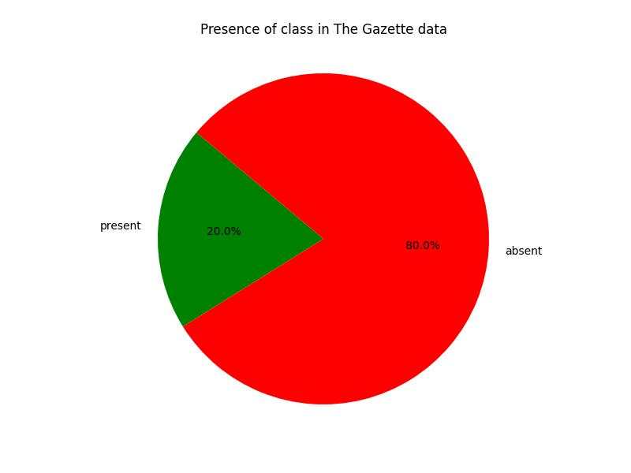
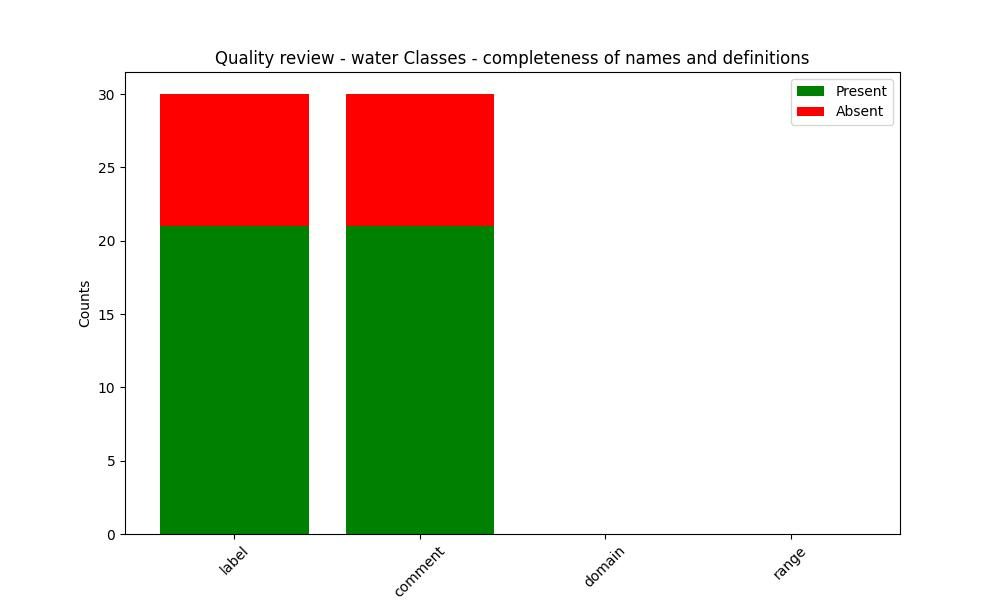
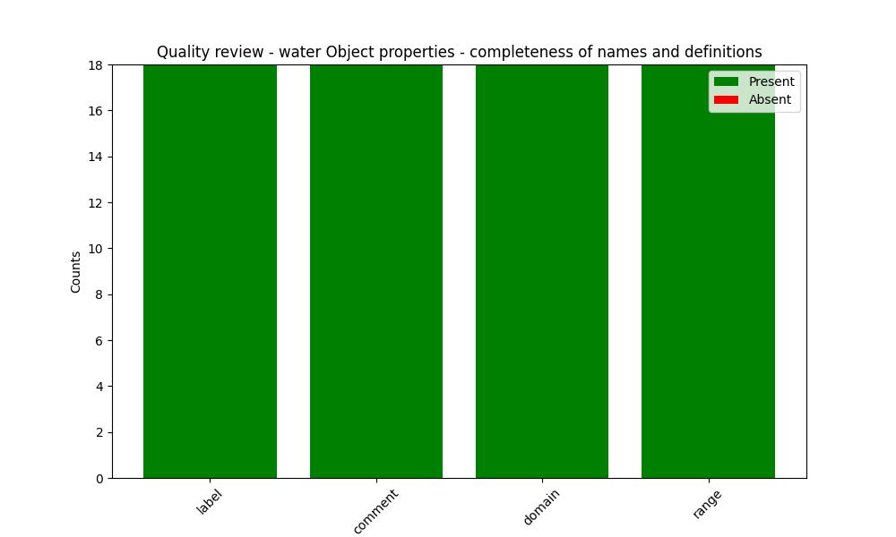
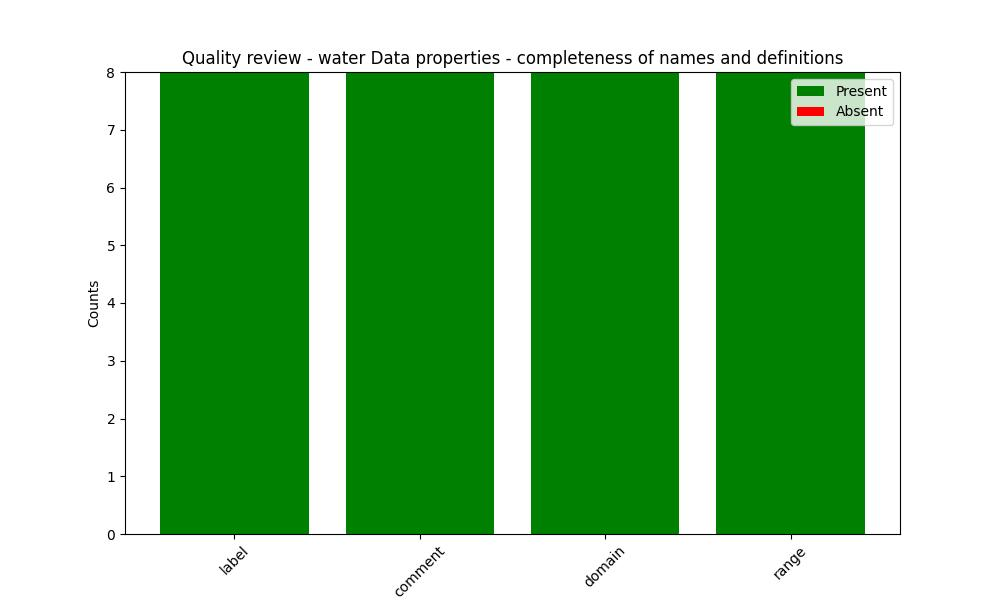

The Gazette Data Model
Water Ontology
Documentation
View documentationQuality review
OWL Class
Relevance
Frequency in The Gazette data
| URI | Frequency |
|---|---|
| https://www.thegazette.co.uk/def/consultation#StatutoryConsultationNotification | 103351 |
| https://www.thegazette.co.uk/def/water#WaterThing | 10503 |
| https://www.thegazette.co.uk/def/water#WaterResourcesNotice | 9719 |
| https://www.thegazette.co.uk/def/water#LandDrainageNotice | 397 |
| https://www.thegazette.co.uk/def/water#NaturalMineralWatersNotice | 210 |
| https://www.thegazette.co.uk/def/water#WaterIndustryNotice | 177 |
| https://www.thegazette.co.uk/def/water#AmalgamationOfDrainageDistrict | 0 |
| https://www.thegazette.co.uk/def/water#ChangeDrainageBaord | 0 |
| https://www.thegazette.co.uk/def/water#ReconstitutionOfDrainageBoard | 0 |
| https://www.thegazette.co.uk/def/water#AbolitionOfDrainageBoard | 0 |
| https://www.thegazette.co.uk/def/water#WaterNotice | 0 |
| https://www.thegazette.co.uk/def/water#ChangeOfSewageUndertaker | 0 |
| https://www.thegazette.co.uk/def/water#NewDrainageBoard | 0 |
| https://www.thegazette.co.uk/def/water#ChangeOfMineralWaterSource | 0 |
| https://www.thegazette.co.uk/def/water#NewRecognitionOfSource | 0 |
| https://www.thegazette.co.uk/def/water#WithdrawnRecognitionOfSource | 0 |
| https://www.thegazette.co.uk/def/water#RedesignateSource | 0 |
| https://www.thegazette.co.uk/def/water#ChangeOfWaterUndertaker | 0 |
| https://www.thegazette.co.uk/def/water#NewDischarge | 0 |
| https://www.thegazette.co.uk/def/water#ChangeOfUndertaker | 0 |
| https://www.thegazette.co.uk/def/water#VariationDischarge | 0 |
| https://www.thegazette.co.uk/def/water#ChangeOfDischarge | 0 |
| https://www.thegazette.co.uk/def/water#DrainageDistrict | 0 |
| https://www.thegazette.co.uk/def/water#InternalDrainageBoard | 0 |
| https://www.thegazette.co.uk/def/water#NaturalMineralWaterSourceApplicationApproval | 0 |
| https://www.thegazette.co.uk/def/water#ApplicationForAppointment | 0 |
| https://www.thegazette.co.uk/def/water#ApplicationForConsent | 0 |
| https://www.thegazette.co.uk/def/water#ByelawConfirmation | 0 |
| https://www.thegazette.co.uk/def/water#Application | 0 |
| https://www.thegazette.co.uk/def/water#NaturalMineralWater | 0 |
Completeness
| URI | https://www.thegazette.co.uk/def/water#WaterNotice |
|---|---|
| Label | None |
| Comment | None |
| URI | https://www.thegazette.co.uk/def/water#WaterThing |
|---|---|
| Label | None |
| Comment | None |
| URI | https://www.thegazette.co.uk/def/water#Application |
|---|---|
| Label | Application class |
| Comment | Applications to local authorities |
| URI | https://www.thegazette.co.uk/def/water#ByelawConfirmation |
|---|---|
| Label | ByelawConfirmation class |
| Comment | Confirmation of byelaw |
| URI | https://www.thegazette.co.uk/def/water#ApplicationForConsent |
|---|---|
| Label | ApplicationForConsent class |
| Comment | Application for consent |
| URI | https://www.thegazette.co.uk/def/water#ApplicationForAppointment |
|---|---|
| Label | ApplicationForAppointment class |
| Comment | Application for appointment |
| URI | https://www.thegazette.co.uk/def/water#NaturalMineralWaterSourceApplicationApproval |
|---|---|
| Label | NaturalMineralWaterSourceApplicationApproval class |
| Comment | Approval of Natural Mineral Water Source Applciation |
| URI | https://www.thegazette.co.uk/def/water#LandDrainageNotice |
|---|---|
| Label | None |
| Comment | None |
| URI | https://www.thegazette.co.uk/def/consultation#StatutoryConsultationNotification |
|---|---|
| Label | None |
| Comment | None |
| URI | https://www.thegazette.co.uk/def/water#NaturalMineralWatersNotice |
|---|---|
| Label | None |
| Comment | None |
| URI | https://www.thegazette.co.uk/def/water#WaterIndustryNotice |
|---|---|
| Label | None |
| Comment | None |
| URI | https://www.thegazette.co.uk/def/water#WaterResourcesNotice |
|---|---|
| Label | None |
| Comment | None |
| URI | https://www.thegazette.co.uk/def/water#InternalDrainageBoard |
|---|---|
| Label | None |
| Comment | None |
| URI | https://www.thegazette.co.uk/def/water#DrainageDistrict |
|---|---|
| Label | None |
| Comment | None |
| URI | https://www.thegazette.co.uk/def/water#ChangeOfDischarge |
|---|---|
| Label | ChangeOfDischarge class |
| Comment | superclass for change of discharge classes |
| URI | https://www.thegazette.co.uk/def/water#NewDischarge |
|---|---|
| Label | NewDischarge class |
| Comment | New discharge |
| URI | https://www.thegazette.co.uk/def/water#VariationDischarge |
|---|---|
| Label | VariationDischarge class |
| Comment | vairation of existing discharge |
| URI | https://www.thegazette.co.uk/def/water#ChangeOfUndertaker |
|---|---|
| Label | ChangeOfUndertaker class |
| Comment | superclass for change of role undertaker |
| URI | https://www.thegazette.co.uk/def/water#ChangeOfSewageUndertaker |
|---|---|
| Label | ChangeOfSewageUndertaker class |
| Comment | change of sewage undertaker |
| URI | https://www.thegazette.co.uk/def/water#ChangeOfWaterUndertaker |
|---|---|
| Label | ChangeOfSewageUndertaker class |
| Comment | change of water undertaker |
| URI | https://www.thegazette.co.uk/def/water#AmalgamationOfDrainageDistrict |
|---|---|
| Label | AmalgamationOfDrainageDistrict class |
| Comment | amalgamation of drainage districts into one district |
| URI | https://www.thegazette.co.uk/def/water#ChangeDrainageBaord |
|---|---|
| Label | ChangeDrainageBaord class |
| Comment | Superclass for change of drainage board classes |
| URI | https://www.thegazette.co.uk/def/water#ReconstitutionOfDrainageBoard |
|---|---|
| Label | ReconstitutionOfDrainageBoard class |
| Comment | Reconsitution (change of number of members) of Drainage Board |
| URI | https://www.thegazette.co.uk/def/water#AbolitionOfDrainageBoard |
|---|---|
| Label | AbolitionOfDrainageBoard class |
| Comment | Abolition of Drainage Board |
| URI | https://www.thegazette.co.uk/def/water#NewDrainageBoard |
|---|---|
| Label | NewDrainageBoard class |
| Comment | Formation of new Drainage Board |
| URI | https://www.thegazette.co.uk/def/water#ChangeOfMineralWaterSource |
|---|---|
| Label | ChangeOfMineralWaterSource class |
| Comment | Superclass for change of mineral water source classes |
| URI | https://www.thegazette.co.uk/def/water#NewRecognitionOfSource |
|---|---|
| Label | NewRecognitionOfSource class |
| Comment | Recognised new source of mineral water |
| URI | https://www.thegazette.co.uk/def/water#WithdrawnRecognitionOfSource |
|---|---|
| Label | WithdrawnRecognitionOfSource class |
| Comment | Withdraw recognition of mineral water source |
| URI | https://www.thegazette.co.uk/def/water#RedesignateSource |
|---|---|
| Label | RedesignateSource class |
| Comment | Redesignate (sometimes refered to as Rename) mineral water source |
| URI | https://www.thegazette.co.uk/def/water#NaturalMineralWater |
|---|---|
| Label | NaturalMineralWater class |
| Comment | Natural mineral water |
Object property
Relevance
Frequency in The Gazette data
| URI | Frequency |
|---|---|
| https://www.thegazette.co.uk/def/water#hasByelaw | 0 |
| https://www.thegazette.co.uk/def/water#hasApplication | 0 |
| https://www.thegazette.co.uk/def/water#hasNewDesignation | 0 |
| https://www.thegazette.co.uk/def/water#hasPreviousDesignation | 0 |
| https://www.thegazette.co.uk/def/water#hasProducer | 0 |
| https://www.thegazette.co.uk/def/water#hasSource | 0 |
| https://www.thegazette.co.uk/def/water#hasMineralWaterDesignation | 0 |
| https://www.thegazette.co.uk/def/water#hasDrainageBoard | 0 |
| https://www.thegazette.co.uk/def/water#hasDrainageDistrict | 0 |
| https://www.thegazette.co.uk/def/water#amalgamatesDrainageDistrict | 0 |
| https://www.thegazette.co.uk/def/water#hasLocationOfUndertaking | 0 |
| https://www.thegazette.co.uk/def/water#hasNewUndertaker | 0 |
| https://www.thegazette.co.uk/def/water#inPlaceOfExistingUndertaker | 0 |
| https://www.thegazette.co.uk/def/water#dischargeFrom | 0 |
| https://www.thegazette.co.uk/def/water#dischargeTo | 0 |
| https://www.thegazette.co.uk/def/water#hasApplicationMadeTo | 0 |
| https://www.thegazette.co.uk/def/water#hasApplicationMadeBy | 0 |
| https://www.thegazette.co.uk/def/water#hasDesignation | 0 |
Completeness
| URI | https://www.thegazette.co.uk/def/water#hasByelaw |
|---|---|
| Label | hasByelaw property |
| Comment | Bylaw that is being confirmed |
| Domain | https://www.thegazette.co.uk/def/water#ByelawConfirmation |
| Range | https://www.thegazette.co.uk/def/legislation#Byelaw |
| URI | https://www.thegazette.co.uk/def/water#hasApplication |
|---|---|
| Label | hasApplication property |
| Comment | Associated Application |
| Domain | https://www.thegazette.co.uk/def/water#Application |
| Range | https://www.thegazette.co.uk/def/legislation#Application |
| URI | https://www.thegazette.co.uk/def/water#hasApplicationMadeBy |
|---|---|
| Label | hasApplicationMadeBy property |
| Comment | Organisation that made the application |
| Domain | https://www.thegazette.co.uk/def/water#Application |
| Range | https://www.thegazette.co.uk/def/organisation#Organisation |
| URI | https://www.thegazette.co.uk/def/water#hasApplicationMadeTo |
|---|---|
| Label | hasApplicationMadeBy property |
| Comment | Organisation the application has been submitted to |
| Domain | https://www.thegazette.co.uk/def/water#Application |
| Range | https://www.thegazette.co.uk/def/organisation#Organisation |
| URI | https://www.thegazette.co.uk/def/water#dischargeTo |
|---|---|
| Label | dischargeTo property |
| Comment | location effluent will discharge into |
| Domain | https://www.thegazette.co.uk/def/water#ChangeOfDischarge |
| Range | http://www.geonames.org/ontology#Feature |
| URI | https://www.thegazette.co.uk/def/water#dischargeFrom |
|---|---|
| Label | dischargeFrom property |
| Comment | location where effluent generated |
| Domain | https://www.thegazette.co.uk/def/water#ChangeOfDischarge |
| Range | http://www.geonames.org/ontology#Feature |
| URI | https://www.thegazette.co.uk/def/water#inPlaceOfExistingUndertaker |
|---|---|
| Label | inPlaceOfExistingUndertaker property |
| Comment | existing undertaker |
| Domain | https://www.thegazette.co.uk/def/water#ChangeOfUndertaker |
| Range | https://www.thegazette.co.uk/def/organisation#Organisation |
| URI | https://www.thegazette.co.uk/def/water#hasNewUndertaker |
|---|---|
| Label | hasNewUndertaker property |
| Comment | new undertaker |
| Domain | https://www.thegazette.co.uk/def/water#ChangeOfUndertaker |
| Range | https://www.thegazette.co.uk/def/organisation#Organisation |
| URI | https://www.thegazette.co.uk/def/water#hasLocationOfUndertaking |
|---|---|
| Label | hasLocationOfUndertaking property |
| Comment | location that is being undertaken |
| Domain | https://www.thegazette.co.uk/def/water#ChangeOfUndertaker |
| Range | http://www.geonames.org/ontology#Feature |
| URI | https://www.thegazette.co.uk/def/water#amalgamatesDrainageDistrict |
|---|---|
| Label | amalgamatesDrainageDistrict property |
| Comment | drainage districts that are being amalgamated |
| Domain | https://www.thegazette.co.uk/def/water#AmalgamationOfDrainageDistrict |
| Range | https://www.thegazette.co.uk/def/water#DrainageDistrict |
| URI | https://www.thegazette.co.uk/def/water#hasDrainageDistrict |
|---|---|
| Label | hasDrainageDistrict property |
| Comment | drainage districts within a drainage board |
| Domain | https://www.thegazette.co.uk/def/water#InternalDrainageBoard |
| Range | https://www.thegazette.co.uk/def/water#DrainageDistrict |
| URI | https://www.thegazette.co.uk/def/water#hasDrainageBoard |
|---|---|
| Label | hasDrainageBoard property |
| Comment | Drainage board that is assocaited with the change of drainage baord |
| Domain | https://www.thegazette.co.uk/def/water#ChangeDrainageBaord |
| Range | https://www.thegazette.co.uk/def/water#InternalDrainageBoard |
| URI | https://www.thegazette.co.uk/def/water#hasMineralWaterDesignation |
|---|---|
| Label | hasMineralWaterDesignation property |
| Comment | Designation of mineral water |
| Domain | https://www.thegazette.co.uk/def/water#ChangeOfMineralWaterSource |
| Range | https://www.thegazette.co.uk/def/water#NaturalMineralWater |
| URI | https://www.thegazette.co.uk/def/water#hasSource |
|---|---|
| Label | hasSource property |
| Comment | location (source) of mineral water |
| Domain | https://www.thegazette.co.uk/def/water#NaturalMineralWater |
| Range | http://www.geonames.org/ontology#Feature |
| URI | https://www.thegazette.co.uk/def/water#hasProducer |
|---|---|
| Label | hasProducer property |
| Comment | organisation associated with mineral water production |
| Domain | https://www.thegazette.co.uk/def/water#NaturalMineralWater |
| Range | https://www.thegazette.co.uk/def/organisation#Organisation |
| URI | https://www.thegazette.co.uk/def/water#hasPreviousDesignation |
|---|---|
| Label | hasPreviousDesignation property |
| Comment | previous mineral water designation |
| Domain | https://www.thegazette.co.uk/def/water#RedesignateSource |
| Range | https://www.thegazette.co.uk/def/water#NaturalMineralWater |
| URI | https://www.thegazette.co.uk/def/water#hasNewDesignation |
|---|---|
| Label | hasNewDesignation property |
| Comment | new mineral water designation |
| Domain | https://www.thegazette.co.uk/def/water#RedesignateSource |
| Range | https://www.thegazette.co.uk/def/water#NaturalMineralWater |
| URI | https://www.thegazette.co.uk/def/water#hasDesignation |
|---|---|
| Label | hasDesignation property |
| Comment | mineral water designation |
| Domain | https://www.thegazette.co.uk/def/water#ChangeOfMineralWaterSource |
| Range | https://www.thegazette.co.uk/def/water#NaturalMineralWater |
Data property
Relevance
Frequency in The Gazette data
| URI | Frequency |
|---|---|
| https://www.thegazette.co.uk/def/water#dateOfApplication | 0 |
| https://www.thegazette.co.uk/def/water#dateOfApproval | 0 |
| https://www.thegazette.co.uk/def/water#dischargeQuantity | 0 |
| https://www.thegazette.co.uk/def/water#dischargeType | 0 |
| https://www.thegazette.co.uk/def/water#newNumberOfMembers | 0 |
| https://www.thegazette.co.uk/def/water#previousNumberOfMembers | 0 |
| https://www.thegazette.co.uk/def/water#nameOfMineralWater | 0 |
| https://www.thegazette.co.uk/def/water#dateOfDesignation | 0 |
Completeness
| URI | https://www.thegazette.co.uk/def/water#dateOfApplication |
|---|---|
| Label | dateOfApplication functional property |
| Comment | date application made |
| Domain | https://www.thegazette.co.uk/def/water#ByelawConfirmation |
| Range | http://www.w3.org/2001/XMLSchema#date |
| URI | https://www.thegazette.co.uk/def/water#dateOfApproval |
|---|---|
| Label | dateOfApproval property |
| Comment | Date approved |
| Domain | https://www.thegazette.co.uk/def/water#NaturalMineralWaterSourceApplicationApproval |
| Range | http://www.w3.org/2001/XMLSchema#date |
| URI | https://www.thegazette.co.uk/def/water#dischargeQuantity |
|---|---|
| Label | dischargeQuantity property |
| Comment | quantity of discharge being applied for |
| Domain | https://www.thegazette.co.uk/def/water#ChangeOfDischarge |
| Range | http://www.w3.org/2001/XMLSchema#string |
| URI | https://www.thegazette.co.uk/def/water#dischargeType |
|---|---|
| Label | dischargeType property |
| Comment | type of discharge being applied for |
| Domain | https://www.thegazette.co.uk/def/water#ChangeOfDischarge |
| Range | http://www.w3.org/2001/XMLSchema#string |
| URI | https://www.thegazette.co.uk/def/water#newNumberOfMembers |
|---|---|
| Label | newNumberOfMembers property |
| Comment | new number of member in reconstituted drainage board |
| Domain | https://www.thegazette.co.uk/def/water#ReconstitutionOfDrainageBoard |
| Range | http://www.w3.org/2001/XMLSchema#integer |
| URI | https://www.thegazette.co.uk/def/water#previousNumberOfMembers |
|---|---|
| Label | previousNumberOfMembers property |
| Comment | previous number of member in reconstituted drainage board |
| Domain | https://www.thegazette.co.uk/def/water#ReconstitutionOfDrainageBoard |
| Range | http://www.w3.org/2001/XMLSchema#integer |
| URI | https://www.thegazette.co.uk/def/water#nameOfMineralWater |
|---|---|
| Label | nameOfMineralWater property |
| Comment | name of mineral water |
| Domain | https://www.thegazette.co.uk/def/water#NaturalMineralWater |
| Range | http://www.w3.org/2001/XMLSchema#string |
| URI | https://www.thegazette.co.uk/def/water#dateOfDesignation |
|---|---|
| Label | dateOfDesignation property |
| Comment | date of mineral water designation |
| Domain | https://www.thegazette.co.uk/def/water#ReconstitutionOfDrainageBoard |
| Range | http://www.w3.org/2001/XMLSchema#date |